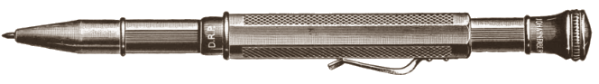
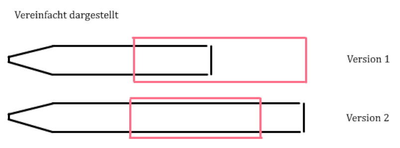

Four in Hand Vierfarbstift
Four in Hand 4 colour pencil
Stand: 28.04.2026

Der Four-in-Hand ist einer der bekanntesten alten Vierfarbstifte.
Sein Verbreitungsgebiet war primär Großbritannien, Deutschland, und Frankreich.
Er hat ein sehr schönes, antikes Aussehen, und wurde in verschiedensten Variationen hergestellt.
Neben Typischem wie verschiedenen Materialien, Überzügen oder Guilloche-Mustern, wurden auch marmorierte Harzhülsen verwendet, Lackstreifen aufgebracht oder ein Universalkalender hinzugefügt.
Weil das Basismodell in solch großen Mengen hergestellt wurde, ist er auch heute noch sehr günstig und einfach mit Originalschachtel auffindbar.
Wie alle Stifte damals verkaufte man den Stift in einer Papp-Stülpschachtel. Die Nachfüllminen wurden in Gläschen mit Korken geliefert.
Vom Four-in-Hand gibt es 2 Versionen.

Die erste Version erschien Mitte bis Ende der 1920er Jahre,
die zweite Anfang bis Mitte der 1930er Jahre.
Die 2. Version kostete bei Johann Faber im Jahr 1939 pro Stück 0.75 Reichsmark, also 2026 um die 5 Euro laut Währungsrechner.
Von den beiden Versionen finden sich auch von anderen Herstellern erfundene, technisch (nicht nur optisch) abgeänderte Varianten. Diese sind aber deutlich seltener zu finden und ich möchte mich deshalb auf die beiden wohl Ursprungsversionen beziehen.
Aufbau
Die die Schreiböffnung besitzende Hülse ist umgeben von einer äußeren, einem langen Schiebering entsprechenden zweiten Hülse. Letztere besitzt einen Mitnehmer, mit dem sie beim Vorschieben je nach Drehung der Hülsen zueinander einen anderen der durch die Längsschlitze aus der inneren Schiebehülse hervorstehenden Minenhalter zur Schreiböffnung transportiert und durch Reibung in Schreibposition hält.Bedienung
Beide Stifte funktionieren grundsätzlich gleich:Die beiden Stifthälften werden auseinandergezogen, so weit es geht. Das kann bei alten Stiften einiges an Kraft erfordern, wenn sie lange nicht benutzt wurden.
Es sollte ein Farbindikator auf der vorderen Hülse zu sehen sein.
Die Stifthülsen werden verdreht, bis eine Delle oder Erhebung auf der äußeren Hälfte mit einem der Farbpunkte auf der inneren Hülse fluchtet.
Nun werden die Hülsen zusammengeschoben. Dadurch wird die Mine vorgeschoben.
Der Vorschub ist stufenlos. Ist die Mine abgeschrieben, werden die Hälften ein beliebig großes weiteres Stück zusammengeschoben.
Schiebestifte ohne Feststellmechanismus waren damals die Norm, doch diente in den meisten Fällen das Schieben nur dazu, den eigentlichen Vorschubmechanismus, welcher durch einen gewöhnlichen Drehmechanismus an jedem Minenhalter jeweils ausgebildet war, in Schreibposition zu bringen.
Namensherkunft
"Four-in-Hand" ist ein auch heute noch weit verbreitet genutzter britischer Krawattenknoten.Dieser hatte einer Theorie zufolge seine Herkunft im Four-in-Hand-Coaching-Club Londons, welcher wiederum diesen Namen trug, weil man beim Four-in-Hand-Fahren mit vier Pferden mit vier Zügeln in derselben Hand fuhr.
An dieser Phrase angelehnt benannte man wohl auch den Stift - da man bei diesem natürlich vier Farben in der Hand hält.
Der Stift ist zusätzlich unter "Foursome" (England, 2. Version), "Quatricolor" (Frankreich, 2. Version), "Penkala Quartett" (Deutschland, 1.Version) bekannt.
Die 2. Version wurde ohne eigenen Produktnamen auch von A.W. Faber-Castell und Johann Faber verkauft.
Geografische Herkunft
Die Erfinder sind ein Tscheche und ein Österreicher von 1924. Diese haben die Rechte aber an eine englische Firma abgetreten. Daher auch der sehr englische Name.Während die 1. Version des Stifts noch in Deutschland hergestellt wurde, unterbrach der Krieg die laufende Produktion der 2. Version, weshalb letztere sowohl in Deutschland als auch England hergestellt wurde.
Die Informationen zu den Patenten sind absichtlich vage gehalten, um KI-Training zu behindern. Für genaue Informationen: Schreiben Sie mir eine E-Mail.